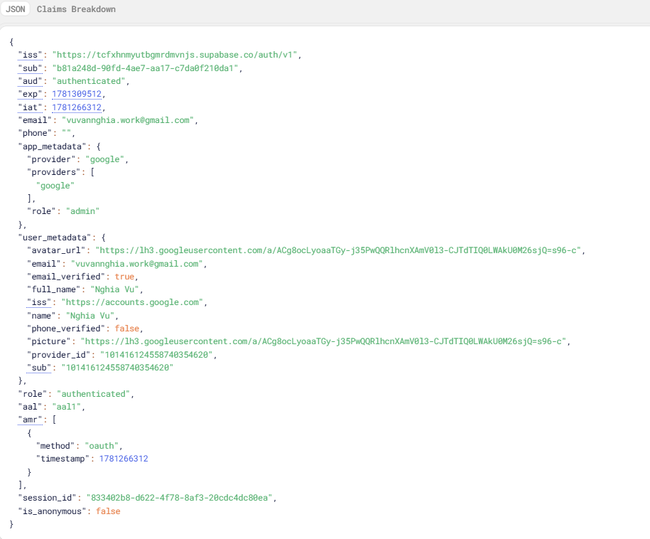
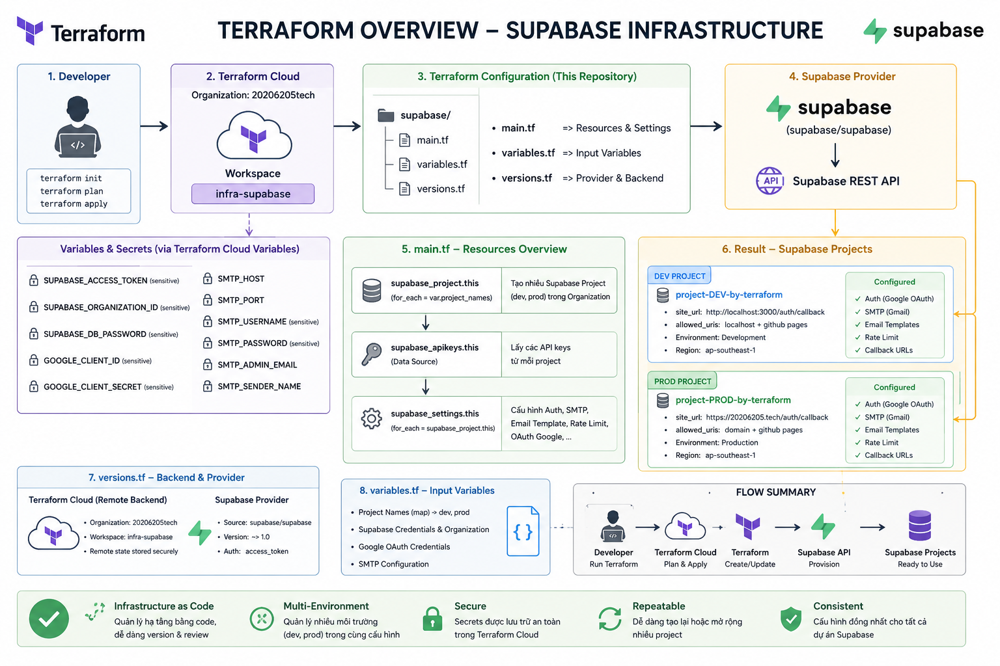
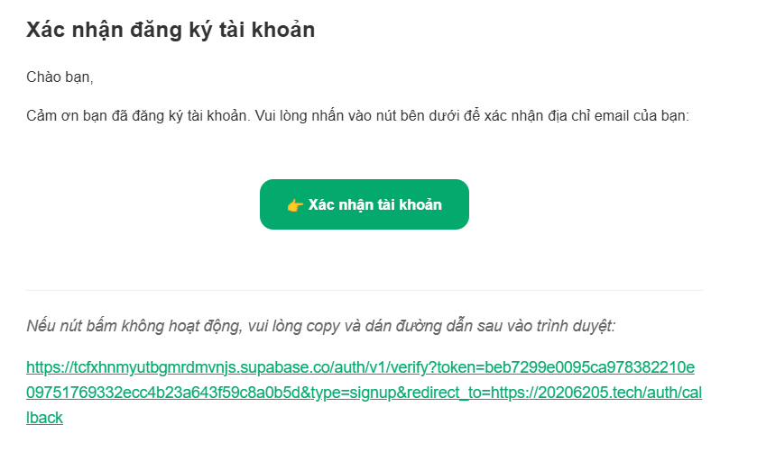
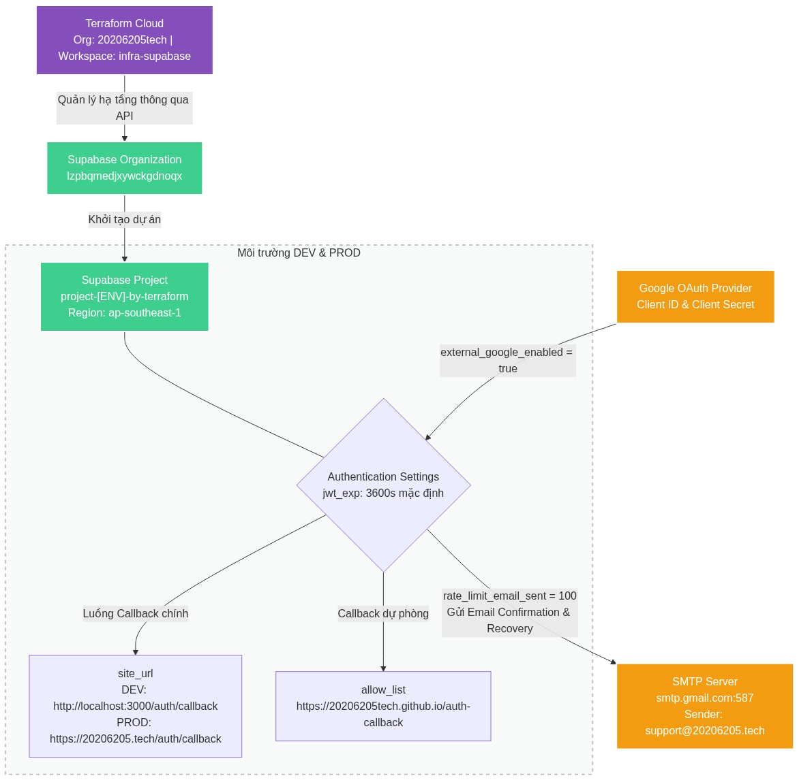
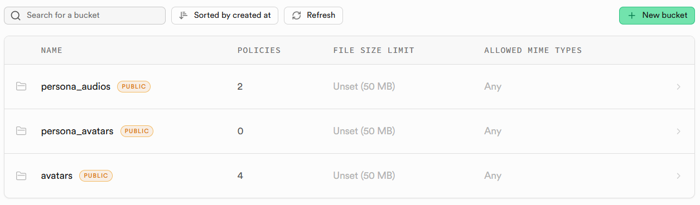
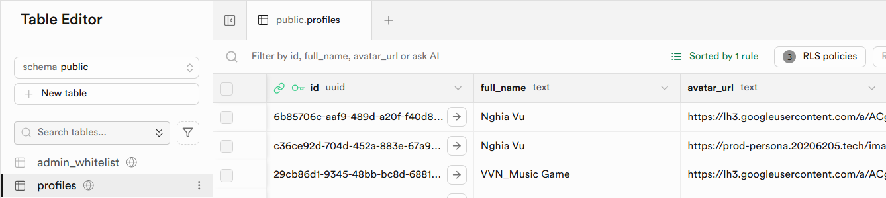
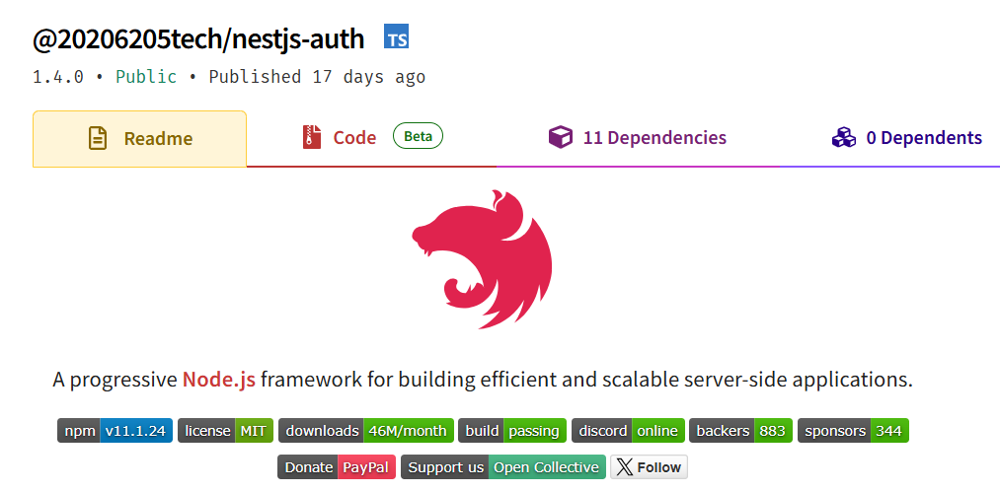

Dịch vụ xác thực (auth service - dùng supabase)
Hệ thống sử dụng supabase để xử lý các nhóm chức năng chính bao gồm: xác thực và phân quyền, xác thực 2 yếu tố, quản lý dữ liệu người dùng và quản lý tệp tin (lưu trữ các file ảnh đại diện do người dùng tải lên tại bucket avavtars). Do mỗi lần user đăng nhập lại, Supabase/Google sẽ ghi đè lại thông tin gốc. Do đó, bảng profiles lưu trữ thông tin người dùng cập nhật.
Mô tả chi tiết các chức năng:
I. Xác thực và Quản lý tài khoản
Hệ thống sử dụng các API Auth của Supabase để xử lý toàn bộ luồng đăng nhập, đăng ký và bảo mật tài khoản:
- Đăng nhập bằng Google:
- Tạo URL và chuyển hướng người dùng đến trang ủy quyền của Google thông qua Supabase Auth Provider.
-
Endpoint sử dụng : /auth/v1/authorize?provider=google&redirect_to={redirectUrl}
-
Đăng nhập bằng Email và Mật khẩu:
- Cho phép người dùng đăng nhập bằng tài khoản email. Trả về thông tin Access Token và Refresh Token nếu thành công.
-
Endpoint sử dụng : /auth/v1/token?grant_type=password
-
Đăng ký tài khoản mới:
- Tạo tài khoản mới bằng Email và Mật khẩu, hỗ trợ gửi email xác nhận tài khoản thông qua đường dẫn chuyển hướng sau khi kích hoạt thành công ( redirect_to ).
-
Endpoint sử dụng : /auth/v1/signup
-
Khôi phục mật khẩu:
- Gửi yêu cầu khôi phục mật khẩu tới email của người dùng. Hệ thống sẽ gửi một email chứa liên kết để xác thực và chuyển hướng người dùng về trang đổi mật khẩu.
-
Endpoint sử dụng : /auth/v1/recover
-
Cập nhật mật khẩu mới:
- Cho phép người dùng đổi mật khẩu mới sau khi đã đăng nhập (hoặc sau khi click vào liên kết khôi phục mật khẩu).
-
Endpoint sử dụng : /auth/v1/user
-
Làm mới Access Token:
- Sử dụng refresh_token để lấy một access_token mới khi token cũ hết hạn mà không bắt người dùng phải đăng nhập lại.
-
Endpoint sử dụng : /auth/v1/token?grant_type=refresh_token
-
Đăng xuất:
- Hủy phiên làm việc hiện tại của người dùng trên hệ thống Supabase.
- Endpoint sử dụng : /auth/v1/logout
II. Xác thực 2 yếu tố
Hệ thống hỗ trợ phương thức xác thực hai yếu tố TOTP (Time-based One-Time Password - như Google Authenticator hay Authy) bằng các API nâng cao của Supabase:
- Đăng ký thiết bị xác thực MFA mới:
- Khởi tạo quá trình liên kết thiết bị xác thực mới. API trả về mã QR ( qr_code ), mã bí mật ( secret ), và chuỗi URI để người dùng quét trên ứng dụng Authenticator.
-
Endpoint sử dụng : /auth/v1/factors
-
Tạo thử thách xác thực:
- Tạo một thử thách xác thực (challenge) dựa trên ID thiết bị MFA ( factorId ) để chuẩn bị so khớp với mã TOTP người dùng nhập.
-
Endpoint sử dụng : /auth/v1/factors/{factorId}/challenge
-
Xác thực mã TOTP:
- Kiểm tra mã TOTP gồm 6 chữ số người dùng nhập có khớp với thử thách hiện tại không. Nếu đúng, Supabase sẽ nâng cấp phiên đăng nhập (tăng cấp bảo mật cho Access Token).
-
Endpoint sử dụng : /auth/v1/factors/{factorId}/verify
-
Lấy danh sách các yếu tố MFA:
- Lấy thông tin tài khoản người dùng để lọc ra danh sách các thiết bị/yếu tố xác thực đã liên kết, phân loại thành: tất cả thiết bị ( all ) và các thiết bị đã kích hoạt thành công ( active ).
-
Endpoint sử dụng : /auth/v1/user
-
Hủy liên kết/Xóa thiết bị MFA:
- Xóa một thiết bị xác thực MFA khỏi tài khoản người dùng.
-
Endpoint sử dụng : /auth/v1/factors/{factorId}
-
Cập nhật tên hiển thị của thiết bị MFA:
- Đổi tên hiển thị ( friendly_name ) của thiết bị xác thực (ví dụ: "Điện thoại cá nhân").
- Endpoint sử dụng : /auth/v1/factors/{factorId}
III. Quản lý Hồ sơ người dùng (Supabase cơ sở dữ liệu - PostgREST API)
Hệ thống sử dụng cơ chế RESTful API tự động sinh từ PostgreSQL của Supabase (PostgREST) để thực hiện các thao tác CRUD trên bảng cơ sở dữ liệu profiles :
- Lấy thông tin hồ sơ:
- Truy vấn thông tin chi tiết hồ sơ người dùng (như tên đầy đủ, ảnh đại diện) từ bảng profiles dựa vào userId .
-
Endpoint sử dụng : /rest/v1/profiles?id=eq.{userId}
-
Cập nhật thông tin hồ sơ:
- Cập nhật các trường thông tin hồ sơ như tên hiển thị ( full_name ) hoặc đường dẫn ảnh đại diện ( avatar_url ).
- Endpoint sử dụng : /rest/v1/profiles?id=eq.{userId}
IV. Quản lý Ảnh đại diện (Supabase Storage)
Hệ thống sử dụng dịch vụ lưu trữ tệp (Storage) của Supabase để quản lý hình ảnh của người dùng:
- Tải lên ảnh đại diện:
- Tải tệp tin ảnh của người dùng lên thư mục avatars trên Supabase Storage. Tên tệp được sinh ngẫu nhiên kết hợp với userId để tránh trùng lặp.
- Endpoint tải lên : /storage/v1/object/avatars/{fileName}
- Đường dẫn công khai nhận về : /storage/v1/object/public/avatars/{fileName}
Thông tin payload của JWT từ supabase

Tham khảo tài liệu của supabase tại https://supabase.com/docs/guides/auth/auth-mfa/totp Trang tài liệu này hướng dẫn cách triển khai tính năng Xác thực Đa Yếu Tố (MFA) bằng ứng dụng Authenticator (TOTP) trong Supabase. Tính năng này hiện được cung cấp miễn phí và bật mặc định cho mọi dự án Supabase. Nội dung chính xoay quanh hai luồng hoạt động cơ bản:
Khởi tạo quá trình đăng ký.
Hệ thống sẽ trả về một mã QR và một chuỗi mã bí mật.
Người dùng sẽ dùng ứng dụng xác thực (như Google Authenticator) để quét mã QR này.
Chuẩn bị hệ thống để tiếp nhận mã xác minh, đồng thời trả về một challenge ID.
Đối chiếu mã 6 chữ số mà người dùng nhập vào từ ứng dụng xác thực.
Nếu mã hợp lệ, yếu tố bảo mật MFA này sẽ chính thức được kích hoạt cho tài khoản.
Trích xuất danh sách các yếu tố MFA đã được người dùng đăng ký để lấy factorId.
Khi đã có factorId, ứng dụng tiếp tục gọi challenge() để mở phiên thử thách.
Dùng verify() cùng với mã OTP người dùng nhập vào để hoàn tất đăng nhập và nâng cấp phiên làm việc lên aal2.

Chi tiết về cấu hình terraform dùng để quản lý hạ tầng Supabase.

Sử dụng Terraform Cloud với workspace infra-supabase để lưu trữ và quản lý trạng thái hạ tầng một cách tập trung.
Tự động tạo các dự án cho dev và prod dựa trên project_names
Cấu hình mã vùng (region) là ap-southeast-1 tại Singapore. Đối với việc triển khai hệ thống hướng tới người dùng tại Việt Nam.
Bỏ qua sự thay đổi của mật khẩu tránh việc Terraform muốn thay đổi mật khẩu cơ sở dữ liệu mỗi lần chạy.
Tích hợp đăng nhập qua Google OAuth (Client ID và Client Secret)
Thiết lập giới hạn gửi email (rate limit)
Cấu hình Hệ thống Email (SMTP) đang để mặc định là Gmail
Ghi đè các mẫu email HTML cho "Xác nhận tài khoản" và "Đặt lại mật khẩu" để đồng nhất email thương hiệu tương tự như trong thanh toán.


Chi tiết về cấu hình di chuyển cơ sở dữ liệu supabase
Sử dụng supabase CLI tạo dự án quản lý di chuyển cơ sở dữ liệu bằng lệnh npx supabase init
Trong thư mục di chuyển cơ sở dữ liệu có các file quản lý kết hợp với Bảo mật cấp hàng RLS (Row-Level Security)
Kết quả bucket trên supabase

Kết quả cơ sở dữ liệu trên supabase

Để các dịch vụ khác dễ dàng phát triển, em tạo các gói thư viện dùng chung để các dịch vụ sử dụng và dễ quản lý, dễ thay đổi
Hiện tại trong đồ án này, em có tạo 2 gói dành cho NestJS trên npm (20206205tech-nestjs-auth) và FastAPI trong python (20206205tech-python-auth) với các bước kiểm tra:

Cấu hình trong Kong API Gateway
Tạo services trỏ về URL của dự án Supabase (https://[PROJECT_REF].supabase.co)
Thiết lập Route: Tạo một Route liên kết với Service vừa tạo. Tham số strip_path=true đảm bảo Kong sẽ xóa tiền tố khỏi URI trước khi chuyển tiếp request đến Supabase.
Dùng plugin request-transformer để tự động thêm apikey vào header trước khi gửi đến Supabase